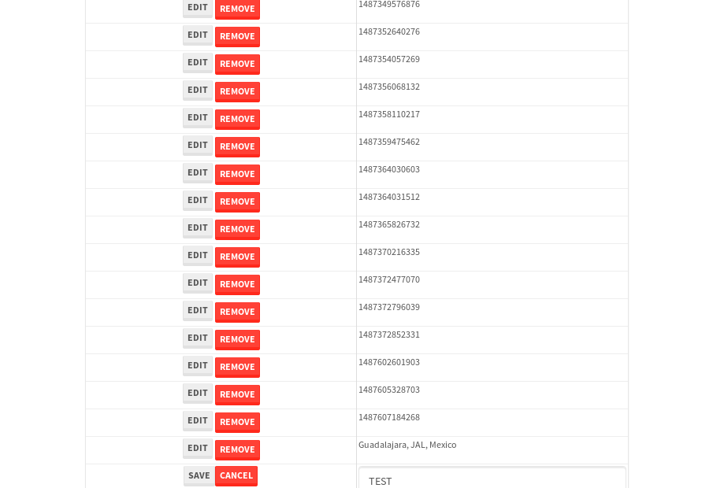

tbColumn.Grid Sorting - 28.086sTests: 5Skipped: 0Failures: 0 should sort data in ascending order then on descending order when sorting by Order Id column - 8.042sTests passed: 100.00%should order data in ascending order when click-sorting an unsorted text column - 4.904sTests passed: 100.00%should order data in descending order when click-sorting an ascending-sorted text column - 5.147sTests passed: 100.00%should order data in ascending order when click-sorting an unsorted date column - 4.568sTests passed: 100.00%should order data in descending order when click-sorting twice an unsorted date column - 5.424sTests passed: 100.00%
tbColumn.Grid Components - 3.908sTests: 3Skipped: 0Failures: 0 should print grid - 1.243s***Skipped***Tests passed: 0%should export grid - 1.422s***Skipped***Tests passed: 0%should show column selector - 1.243sTests passed: 100.00%
tbSingleForm.Form validations - 3.145sTests: 2Skipped: 0Failures: 0 should have an empty required field - 2.059sTests passed: 100.00%should not be able to click on save - 1.086sTests passed: 100.00%
Tubular Filters.tbColumnFilter - 108.83sTests: 12Skipped: 0Failures: 0 should cancel filtering when clicking outside filter-popover - 9.018sTests passed: 100.00%should disable Value text-input for "None" filter - 6.712sTests passed: 100.00%should disable apply button for "None" filter - 6.724sTests passed: 100.00%should decorate popover button when showing data is being filtered for its column - 12.364sTests passed: 100.00%should correctly filter data for the "Equals" filtering option - 8.499sTests passed: 100.00%should correctly filter data for the "Not Equals" filtering option - 8.791sTests passed: 100.00%should correctly filter data for the "Contains" filtering option - 8.212sTests passed: 100.00%should correctly filter data for the "Not Contains" filtering option - 8.773sTests passed: 100.00%should correctly filter data for the "Starts With" filtering option - 7.252sTests passed: 100.00%should correctly filter data for the "Not Starts With" filtering option - 7.202sTests passed: 100.00%should correctly filter data for the "Ends With" filtering option - 6.956sTests passed: 100.00%should correctly filter data for the "Not Ends With" filtering option - 7.093sTests passed: 100.00%
Tubular Filters.tbColumnDateTimeFilter - 133.459sTests: 12Skipped: 0Failures: 0 should cancel filtering when clicking outside filter-popover - 7.167sTests passed: 100.00%should disable Value text-input for "None" filter - 6.498sTests passed: 100.00%should disable apply button for "None" filter - 6.544sTests passed: 100.00%should clear filtering when clicking on Clean button - 17.593sTests passed: 100.00%should decorate popover button when showing data is being filtered for its column - 11.966sTests passed: 100.00%should correctly filter data for the "Equals" filtering option - 7.074sTests passed: 100.00%should correctly filter data for the "Not Equals" filtering option - 6.894sTests passed: 100.00%should correctly filter data for the "Between" filtering option - 11.985sTests passed: 100.00%should correctly filter data for the "Greater-or-equal" filtering option - 11.746sTests passed: 100.00%should corretlly filter data for the "Greater" filtering option - 11.794sTests passed: 100.00%should correctly filter data for the "Less-or-equal" filtering option - 11.826sTests passed: 100.00%should correctly filter data for the "Less" filtering option - 11.502sTests passed: 100.00%
Tubular Filters.tbColumnOptionsFilter - 80.52sTests: 3Skipped: 0Failures: 0 should cancel filtering when clicking outside filter-popover - 8.787sTests passed: 100.00%should decorate popover button when showing data is being filtered for its column - 11.731sTests passed: 100.00%should filter column-elements in accordance to the selected filter when selecting a single option - 48.922sTests passed: 100.00%
Tubular Filters.tbTextSearch - 47.405sTests: 5Skipped: 0Failures: 0 min-chars is not set - 0.938sTests passed: 100.00%should filter data in searchable-column customer name to matching inputted text, starting from 3 characters - 6.598sTests passed: 100.00%should filter data in searchable-column shipper city to matching inputted text, starting from 3 characters - 11.758sTests passed: 100.00%should show clear button when there is inputted text only - 6.482sTests passed: 100.00%should clear filtering when clicking clear button - 16.349sTests passed: 100.00%
tbForm related components.tbCheckboxField - 7.238sTests: 2Skipped: 0Failures: 0 should save changes on "SAVE" - 3.539sTests passed: 100.00%should discard changes on "CANCEL" - 2.285sTests passed: 100.00%
tbForm related components.tbDropDownEditor - 11.518sTests: 5Skipped: 0Failures: 0 should set initial input value to the value of "value" attribute when defined - 1.924sTests passed: 100.00%should show the component name value in a label field when "showLabel" attribute is true - 1.69sTests passed: 100.00%should show a help field equal to this attribute, is present - 1.643sTests passed: 100.00%should submit modifications to item/server when clicking form "Save" - 2.94sTests passed: 100.00%should NOT submit modifications to item/server when clicking form "Cancel" - 2.673sTests passed: 100.00%
tbForm related components.tbTextArea - 16.178sTests: 7Skipped: 0Failures: 0 should set initial input value to the value of "value" attribute when defined - 1.823sTests passed: 100.00%should be invalidated when the number of chars is not in the range of "min" and "max" attributes - 2.131sTests passed: 100.00%should show the component name value in a label field when "showLabel" attribute is true - 1.999sTests passed: 100.00%should show a help field equal to this attribute, is present - 2.179sTests passed: 100.00%should require the field when the attribute "required" is true - 1.841sTests passed: 100.00%should submit modifications to item/server when clicking form "Save" - 2.839sTests passed: 100.00%should NOT submit modifications to item/server when clicking form "Cancel" - 2.519sTests passed: 100.00%
tbForm related components.tbDateEditor - 12.451sTests: 6Skipped: 0Failures: 1 should set initial date value to the value of "value" attribute when defined - 1.584sTests passed: 100.00%should be invalidated when the date is not in the range of "min" and "max" attributes - 2.192sTests passed: 100.00%should show the component name value in a label field when "showLabel" attribute is true - 1.872sTests passed: 100.00%should show a help field equal to this attribute, is present - 1.831sTests passed: 100.00%should submit modifications to item/server when clicking form "Save" - 2.286sExpected false to be true.✗Tests passed: 0.00%should NOT submit modifications to item/server when clicking form "Cancel" - 1.879sTests passed: 100.00%
tbForm related components.tbTypeaheadEditor - 16.56sTests: 7Skipped: 0Failures: 0 should show an options list when there is an API-info/component entered-data - 2.566sTests passed: 100.00%should select the option clicked - 2.236sTests passed: 100.00%should show a "delete" button when an option/match is selected, and delete the option if button is clicked - 2.214sTests passed: 100.00%should show a label value equal to the component name when "showLabel" attribue is true - 1.479sTests passed: 100.00%should require a value when "require" attribute is true - 2.528sTests passed: 100.00%should submit modifications to item/server when clicking form "Save" - 3.108sTests passed: 100.00%should NOT submit modifications to item/server when clicking form "Cancel" - 1.866sTests passed: 100.00%
tbForm related components.tbSimpleEditor - 19.835sTests: 9Skipped: 0Failures: 0 should set initial input value to the value of "value" attribute when defined - 1.655sTests passed: 100.00%should be invalidated when the number of chars is not in the range of "min" and "max" attributes - 2.863sTests passed: 100.00%should show the component name value in a label field when "showLabel" attribute is true - 1.747sTests passed: 100.00%should set input placeholder to the value of "placeholder" attribute - 1.81sTests passed: 100.00%should validate the control using the "regex" attribute, if present - 2.123sTests passed: 100.00%should show a help field equal to this attribute, is present - 1.817sTests passed: 100.00%should require the field when the attribute "required" is true - 2.067sTests passed: 100.00%should submit modifications to item/server when clicking form "Save" - 2.846sTests passed: 100.00%should NOT submit modifications to item/server when clicking form "Cancel" - 2.304sTests passed: 100.00%
tbForm related components.tbNumericEditor - 16.473sTests: 7Skipped: 0Failures: 0 should set initial component value to the value of "value" attribute when defined - 1.578sTests passed: 100.00%should be invalidated when the entered number is not in the range of "min" and "max" attributes - 2.043sTests passed: 100.00%should show the component name value in a label field when "showLabel" attribute is true - 1.664sTests passed: 100.00%should show a help field equal to this attribute, is present - 2.02sTests passed: 100.00%should require the field when the attribute "required" is true - 1.881sTests passed: 100.00%should submit modifications to item/server when clicking form "Save" - 4.567sTests passed: 100.00%should NOT submit modifications to item/server when clicking form "Cancel" - 2.165sTests passed: 100.00%
tbForm Connection Error NoModelKey - 2.436sTests: 1Skipped: 0Failures: 0 tbForm connection error functionality - 0.446sTests passed: 100.00%
tbForm Connection Error NoServerUrl - 2.286sTests: 1Skipped: 0Failures: 0 tbForm connection error functionality - 0.47sTests passed: 100.00%
tbGridComponents - 31.724sTests: 6Skipped: 0Failures: 4 should add item with newRow method - 4.39sExpected 'EDIT REMOVE TEST' not to be 'EDIT REMOVE TEST'.✗Tests passed: 50.00%should add item with newRow method and cancel action - 1.118sTests passed: 100.00%should update item with tbSaveButton - 1.667sExpected '' to be 'TEST'.✗Tests passed: 0.00%should NOT update item on cancel Update action - 0.981sFailed: ElementNotVisibleError✗Tests passed: 0.00%should remove item with tbRemoveButton - 21.134sExpected 59 not to be 59, 'should remove the row from the table'.✗Tests passed: 50.00%should NOT remove item on cancel Remove action - 0.995sTests passed: 100.00%
tbGridPager.navigation buttons - 8.982sTests: 1Skipped: 0Failures: 0 should perform no action when clicking on the numbered navigation button corresponding to the current-showing results page - 1.271sTests passed: 100.00%
tbGridPager.navigation buttons.first/non-last results page related functionallity - 3.594sTests: 2Skipped: 0Failures: 0 should disable "first" and "previous" navigation buttons when in first results page - 1.8sTests passed: 100.00%should enable "last" and "next" navigation buttons when in a results page other than last - 1.794sTests passed: 100.00%
tbGridPager.navigation buttons.last/non-first results page related functionallity - 4.115sTests: 2Skipped: 0Failures: 0 should disable "last" and "next" navigation buttons when in last results page - 1.966sTests passed: 100.00%should enable "first" and "previous" navigation buttons when in a results page other than first - 2.149sTests passed: 100.00%
tbGridPager.page navigation - 7.003sTests: 5Skipped: 0Failures: 0 should go to next results page when clicking on next navigation button - 1.522sTests passed: 100.00%should go to previous results page when clicking on previous navigation button - 1.456sTests passed: 100.00%should go to last results page when clicking on last navigation button - 1.568sTests passed: 100.00%should go to first results page when clicking on first navigation button - 1.325sTests passed: 100.00%should go to corresponding results page when clicking on a numbered navigation button - 1.132sTests passed: 100.00%
tbGridPagerInfo - 4.706sTests: 2Skipped: 0Failures: 0 should show text in accordance to numbered of filter rows and current results-page - 1.275sTests passed: 100.00%should show count in footer - 0.485sTests passed: 100.00%
tbHttp - 18.007sTests: 8Skipped: 1Failures: 0 should be authenticated - 2.678sTests passed: 100.00%retrieve data - 3.401sTests passed: 100.00%should not login bad credentials - 2.178sTests passed: 100.00%should have a refresh token - 2.728sTests passed: 100.00%should remove authentication - 2.344sTests passed: 100.00%get method-Is not authenticated - 2.321sTests passed: 100.00%post method-Is not authenticated - 2.345sTests passed: 100.00%should regenerate access token on post - 0s***Skipped***Tests passed: 0%
tbPageSizeSelctor - 10.794sTests: 4Skipped: 0Failures: 0 should filter up to 10 data rows per page when selecting a page size of "10" - 2.491sTests passed: 100.00%should filter up to 20 data rows per page when selecting a page size of "20" - 1.406sTests passed: 100.00%should filter up to 50 data rows per page when selecting a page size of "50" - 2.497sTests passed: 100.00%should filter up to 100 data rows per page when selecting a page size of "100" - 1.861sTests passed: 100.00%
tbRowSelectable - 9.001sTests: 2Skipped: 0Failures: 0 selected rows - 4.776sTests passed: 100.00%unselected rows - 2.739sTests passed: 100.00%
tbSingleForm - 20.8sTests: 8Skipped: 0Failures: 1 should load correct info - 2.231sTests passed: 100.00%should change customer name - 3.563sTests passed: 100.00%should save it - 2.612sFailed: Element is not enabled✗Tests passed: 0.00%should clear the inputs - 2.651sTests passed: 100.00%should update - 2.515sTests passed: 100.00%should reset editor - 2.393sTests passed: 100.00%should not save if not Changes - 2.502sTests passed: 100.00%should not be able to click on save - 2.332sTests passed: 100.00%


{kind=link}